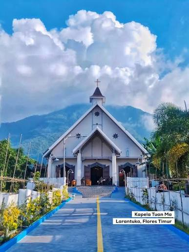
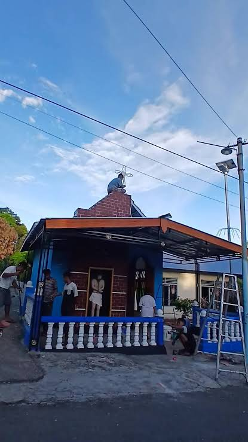

Menyusuri empat titik ziarah rohani di jantung Kota Larantuka — kota kecil di ujung timur Flores yang selama lebih dari lima abad menjaga warisan iman Katolik peninggalan Portugis.
Kelurahan LarantukaKab. Flores Timur, NTT4 Situs Pusaka
Gulir untuk memulai
Kota Reinha
Kota kecil yang disebut orang sebagai "Vatikan-nya Indonesia"
Larantuka dikenal sebagai pusat tradisi Semana Santa — Pekan Suci Paskah warisan Portugis yang telah bertahan hampir lima abad. Di antara gang-gang kampung tua, tersimpan kapela-kapela pusaka, tori-tori adat, dan taman doa yang setiap tahun menjadi jalur prosesi ribuan peziarah. Storymap ini mengajak Anda menyusuri empat di antaranya, satu per satu, lengkap dengan sejarah dan maknanya bagi masyarakat Nagi.
Bukit FatimaKapela Tuan MaTori Tuan TrewaKapela St. Yosef
Kota Larantuka, Flores Timur
01
LARANTUKA
Taman Doa Bukit Fatima
Taman doa di puncak bukit, menghadap ke laut Larantuka
Berdiri di puncak Bukit San Dominggo, taman doa ini mulai dibangun pada tahun 2014 dan diresmikan pada 2017 — tepat menandai satu abad peristiwa penampakan Bunda Maria di Fatima, Portugal (1917–2017). Di tengah taman berdiri Kapela Santa Maria de Fatima yang dikelilingi jalur doa dan taman asri.
Dari sini, seluruh Kota Larantuka dan gugusan pulau-pulau kecil di sekitarnya dapat terlihat jelas — menjadikan Bukit Fatima bukan hanya tempat devosi, tetapi juga titik pandang yang memperlihatkan mengapa kota ini begitu erat dengan laut dan langit.
Dibangun 2014 · Diresmikan 2017100 Tahun Fatima 1917–2017Titik pandang kota
02
LARANTUKA
Kapela Tuan Ma

Kapela penyimpanan arca Tuan Ma, pusat devosi Semana Santa
Menurut cerita yang diwariskan turun-temurun, arca yang disebut warga sebagai "Tuan Ma" ditemukan terdampar di pantai Larantuka sekitar tahun 1510, diyakini berasal dari kapal Portugis atau Spanyol yang karam. Pada abad ke-16, imam-imam Dominikan mengenali arca tersebut sebagai patung Bunda Maria, dan dari titik itulah agama Katolik mulai berakar di tanah Larantuka.
Kapela ini menjadi salah satu dari hanya dua kapela utama dalam tradisi Semana Santa — bersama Kapela Tuan Ana di Lohayong. Sepanjang tahun arca disimpan dalam kesunyian, dan hanya dikeluarkan sekali dalam prosesi Pekan Suci, saat ribuan peziarah datang untuk mencium Tuan Ma sebagai ungkapan devosi.
Ditemukan ± 1510Warisan Portugis ± 5 abadPusat prosesi Semana Santa
03
LARANTUKA
Tori Tuan Trewa

Tori — rumah pusaka adat milik Suku Fernandez Aikoli
Berbeda dengan kapela, sebuah "tori" adalah rumah pusaka adat milik suku tertentu di Larantuka, tempat menyimpan benda-benda suci warisan leluhur seperti salib dan patung. Tori Tuan Trewa — juga dikenal sebagai Tori Aikoli — adalah milik Suku Fernandez Aikoli, satu dari sekitar dua belas tori yang tersebar di Kota Larantuka.
Tori ini menjadi pusat ritual "Rabu Trewa", penanda dimulainya masa berkabung dalam Pekan Suci. Setelah lampu-lampu di sekitar kapela dipadamkan, para pemuda berlarian menyeret lempengan seng dari depan Kapela Tuan Ma, berbelok ke arah tori ini, lalu kembali menuju Kapela Tuan Ana. "Trewa" sendiri berarti bunyi-bunyian — tanda kota memasuki keheningan sengsara menjelang Paskah.
Catatan lapangan: Koordinat Tori Tuan Trewa pada peta ini adalah estimasi berdasarkan deskripsi rute prosesi Rabu Trewa (± 100 m dari Kapela Tuan Ma), karena titik pastinya belum terverifikasi di peta digital. Tim KKN merekomendasikan pemutakhiran titik ini setelah survei lapangan langsung.
Milik Suku Fernandez AikoliPusat ritual Rabu Trewa1 dari ± 12 tori di Larantuka
04
LARANTUKA
Kapela St. Yosef
Kapela St. Yosef, ruang doa yang tenang di tengah Larantuka
Tak jauh dari Kapela Tuan Ma dan Tori Tuan Trewa, berdiri Kapela St. Yosef — kapela kecil yang didedikasikan bagi Santo Yosef. Bersama puluhan kapela lain yang tersebar di kampung-kampung Larantuka, kapela ini menjadi bagian dari jaringan ruang ibadah yang menopang kehidupan rohani harian warga Nagi, jauh dari hiruk-pikuk prosesi besar.
Suasananya sederhana dan hening, menjadikannya tempat yang tepat untuk berdoa pribadi maupun untuk mengenal lebih dekat bagaimana iman Katolik hidup berdampingan dengan adat istiadat lokal di setiap sudut kota ini.
Didedikasikan bagi St. YosefRuang doa harian warga Nagi
Akhir Perjalanan
Empat titik, satu benang merah iman
Dari taman doa di puncak bukit, turun ke kapela pusaka di tepi pantai, singgah di rumah adat penjaga pusaka leluhur, hingga berhenti di kapela kecil yang tenang — keempat situs ini menunjukkan bagaimana Larantuka merajut devosi Katolik, adat suku, dan kehidupan sehari-hari menjadi satu jalinan yang utuh selama hampir lima abad.
Bukit Fatima→Kapela Tuan Ma→Tori Tuan Trewa→Kapela St. Yosef